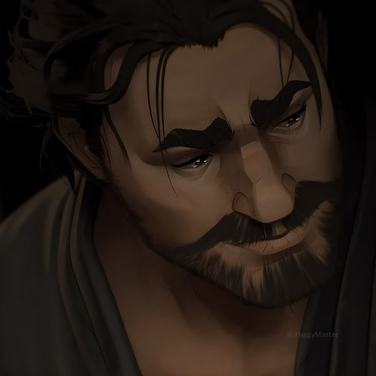
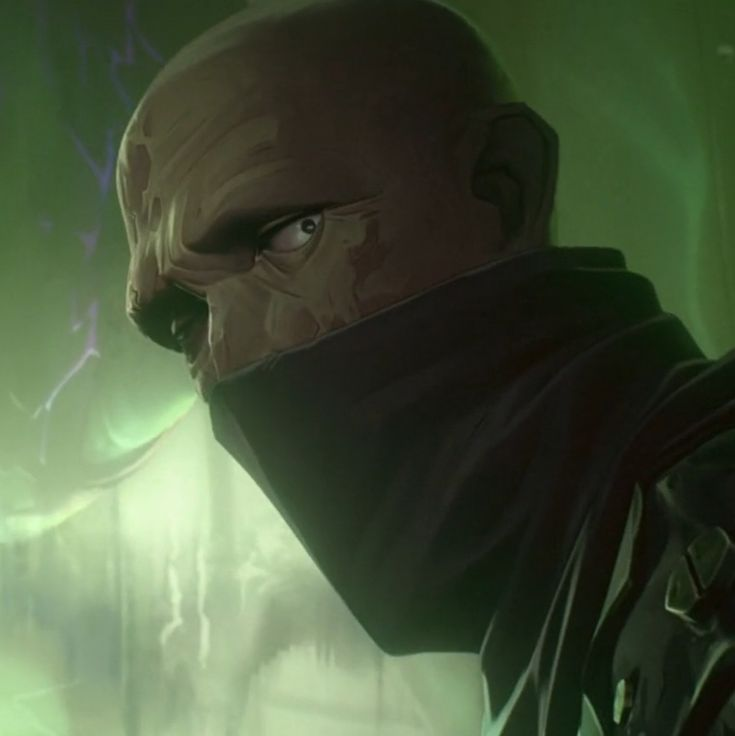

.png)
 VI
VI
PERSONAJES PRINCIPALES
VI
VI
Vi, cuyo nombre completo es Violet, es una de las protagonistas principales de Arcane. Es la hermana mayor de Powder, quien posteriormente adopta el nombre de Jinx. Creció en Zaun bajo la protección de Vander junto a Powder, Mylo y Claggor. Vi se caracteriza por ser impulsiva, determinada y protectora con las personas que considera su familia. A lo largo de la serie, su objetivo principal es proteger a su hermana y encontrar una manera de reparar la relación entre ambas. También desarrolla una relación cercana con Caitlyn mientras investigan los acontecimientos relacionados con Silco y Zaun.
apariciones en capitulos
Temporada 1: capítulos 1, 2, 3, 4, 5, 6, 7, 8 y 9.
Temporada 2: capítulos 1, 2 y 3; 5, 6, 8 y 9.
En el capítulo 4 de la segunda temporada solamente es mencionada.
ACTRIZ DE VOZ
Hailee Steinfeld
 JINX
JINX
JINX / POWDER
Jinx nació con el nombre de Powder y es la hermana menor de Vi. Durante su infancia fue adoptada por Vander y creció junto a Vi, Mylo y Claggor. Después de una serie de acontecimientos que cambian completamente su vida, Powder comienza a ser conocida como Jinx. Su personaje representa uno de los conflictos centrales de la serie: la relación entre las dos hermanas y las consecuencias de las decisiones tomadas durante su infancia. Jinx es una inventora y combatiente extremadamente habilidosa, además de ser conocida por sus armas y sus creaciones tecnológicas.
apariciones en capitulos
Temporada 1: capítulos 1, 2, 3, 4, 5, 6, 7, 8 y 9.
Temporada 2: capítulos 2, 3, 4, 5, 6, 8 y 9.
También aparece indirectamente mediante ilusiones y recuerdos en otros capítulos.
ACTRIZ DE VOZ
Ella Purnell — Jinx adulta.
Mia Sinclair Jenness — Powder joven.
 CAITLYN
CAITLYN
CAITLYN KIRAMMAN
Caitlyn es una integrante de la prestigiosa familia Kiramman de Piltover. Desde joven demuestra una gran habilidad para investigar y utilizar armas de precisión. A pesar de pertenecer a una de las familias más importantes de Piltover, Caitlyn desarrolla una mayor comprensión de Zaun al trabajar junto a Vi. Su investigación sobre Silco y el tráfico de Shimmer la convierte en una pieza importante del conflicto entre ambas ciudades. Su relación con Vi también se convierte en uno de los vínculos más importantes de la serie.
apariciones en capitulos
Temporada 1: capítulos 2, 4, 5, 6, 7, 8 y 9.
Temporada 2: capítulos 1, 2, 3, 4, 5, 6, 8 y 9.
No aparece en el capítulo 7 de la segunda temporada.
ACTRIZ DE VOZ
Katie Leung — Caitlyn adulta.
Molly Harris — Caitlyn joven.
 JAYCE
JAYCE
JAYCE TALIS
Jayce es un inventor y científico de Piltover que busca utilizar la tecnología para mejorar la vida de las personas. Después de descubrir el potencial de la magia y trabajar junto a Viktor, ambos desarrollan la tecnología Hextech. Jayce también se convierte en miembro del Consejo de Piltover y comienza a participar activamente en las decisiones políticas de la ciudad. Su historia muestra el conflicto entre sus ideales científicos, sus responsabilidades políticas y las consecuencias de sus decisiones.
apariciones en capitulos
Temporada 1: capítulos 1, 2, 3, 4, 5, 6, 7, 8 y 9.
En el capítulo 1 su presencia es mínima y su identidad permanece oculta; las apariciones principales comienzan en el capítulo 2.
Temporada 2: capítulos 1, 2, 3, 5, 6, 7, 8 y 9.
En el capítulo 4 solamente es mencionado.
ACTOR DE VOZ
Kevin Alejandro — Jayce adulto.
Faustino Duran — Jayce joven.
 VIKTOR
VIKTOR
VIKTOR
Viktor es un científico originario de Zaun que trabaja en Piltover. Debido a su inteligencia y a su interés por la tecnología, se convierte en colaborador de Jayce. Juntos desarrollan Hextech con la intención de mejorar la vida de las personas. Viktor también enfrenta un deterioro progresivo de su salud, lo que influye fuertemente en sus decisiones y en su búsqueda de nuevas formas de evolución. Su historia explora los límites entre la ciencia, la tecnología y el deseo de superar las propias limitaciones.
apariciones en capitulos
Temporada 1: capítulos 2, 3, 4, 5, 6, 7, 8 y 9.
Temporada 2: capítulos 1, 2, 5, 6, 7, 8 y 9.
No aparece en los capítulos 3 y 4 de la segunda temporada.
ACTOR DE VOZ
Harry Lloyd — Viktor adulto.
Edan Hayhurst — Viktor joven.
 EKKO
EKKO
EKKO
Ekko es un joven inventor de Zaun que creció junto a Vi, Powder, Mylo y Claggor. Durante su infancia trabajó en la tienda de Benzo y desarrolló una gran habilidad para construir y reparar objetos. Con el paso del tiempo se convierte en el líder de los Firelights, un grupo que intenta proteger a los habitantes de Zaun. Ekko representa la capacidad de la comunidad para resistir y construir un futuro diferente.
apariciones en capitulos
Temporada 1: capítulos 1, 2, 3, 4, 6, 7, 8 y 9.
No aparece en el capítulo 5.
Temporada 2: capítulos 2, 3, 7 y 9.
En el capítulo 4 es mencionado.
ACTOR DE VOZ
Reed Shannon — Ekko adulto.
Miles Brown — Ekko joven.

VANDERVANDER
Vander es una de las figuras paternas más importantes de la infancia de Vi y Powder. Es una figura respetada en Zaun y actúa como protector de la comunidad. Después de experimentar las consecuencias de los conflictos entre Piltover y Zaun, decide priorizar la seguridad de los niños y mantener la paz. Su pasado también está conectado directamente con Silco.
apariciones en capitulos
Temporada 1: capítulos 1, 2 y 3. También aparece de manera indirecta mediante recuerdos o ilusiones posteriores.
Temporada 2: capítulos 3, 4, 5, 6, 7, 8 y 9 mediante recuerdos, apariciones relacionadas con Warwick y diferentes versiones de su historia.
ACTOR DE VOZ
J.B. Blanc
 MEL
MEL
MEL MEDARDA
Mel Medarda es una integrante del Consejo de Piltover y miembro de la poderosa familia Medarda. Es inteligente, estratégica y tiene una gran capacidad para comprender los conflictos políticos. Su relación con Jayce influye tanto en su vida personal como en las decisiones que toma dentro del Consejo. También mantiene una relación complicada con su madre, Ambessa, debido a sus diferentes maneras de entender el poder y la política.
apariciones en capitulos
Temporada 1: capítulos 2, 3, 4, 5, 6, 7, 8 y 9.
Temporada 2: capítulos 1, 3, 5, 8 y 9.
ACTRIZ DE VOZ
Toks Olagundoye — Mel adulta.
Imogen Faires — Mel joven.
 AMBESSA
AMBESSA
AMBESSA MEDARDA
Ambessa es la madre de Mel y una poderosa guerrera de Noxus. Se caracteriza por su mentalidad estratégica, su ambición y su fuerte interés por proteger el legado de su familia. A diferencia de Mel, Ambessa considera que el poder y la fuerza son herramientas necesarias para garantizar la supervivencia. Su llegada a Piltover aumenta las tensiones políticas y modifica el equilibrio de poder.
apariciones en capitulos
Temporada 1: capítulos 8 y 9.
Temporada 2: capítulos 1, 3, 4, 5, 6, 8 y 9.
ACTRIZ DE VOZ
Ellen Thomas
 SEVIKA
SEVIKA
SEVIKA
Sevika es una luchadora de Zaun que fue la mano derecha de Vander y posteriormente de Silco. Es una de las figuras más importantes del conflicto entre los habitantes de Zaun y Piltover. Se caracteriza por su lealtad, fuerza y determinación, y cuenta con un brazo mecánico que utiliza como arma. Después de la muerte de Silco, Sevika se acerca a Jinx y continúa luchando por el futuro de Zaun. A lo largo de la segunda temporada, su relación con Jinx y su participación en la resistencia de Zaun adquieren mayor importancia.
apariciones en capitulos
Temporada 1: capítulos 2, 3, 4, 5, 6, 7, 8 y 9.
Temporada 2: capítulos 2, 3, 4, 7, 8 y 9.
ACTRIZ DE VOZ
Amirah Vann
 Heimerdinger
Heimerdinger
HEIMERDINGER
Heimerdinger es un científico y miembro histórico del Consejo de Piltover. Es un yordle extremadamente longevo que ha dedicado gran parte de su vida al estudio de la ciencia y la magia. Debido a su experiencia, suele ser más cauteloso que otros científicos frente a los riesgos de Hextech. Su relación con Jayce y Viktor muestra el conflicto entre la prudencia científica y el deseo de avanzar rápidamente..
apariciones en capitulos
Temporada 1: capítulos 2, 3, 4, 5, 6, 7, 8 y 9.
ACTOR DE VOZ
Mick Wingert

SINGEDSINGED
Singed es un científico de Zaun conocido por sus experimentos y su búsqueda constante de nuevos avances científicos. Su trabajo está relacionado con algunas de las tecnologías y sustancias más peligrosas de la historia de Zaun. Aunque inicialmente aparece como un personaje secundario, sus investigaciones terminan teniendo una gran importancia en acontecimientos posteriores.
apariciones en capitulos
Temporada 1: capítulos 1, 2, 3, 6, 7, 8 y 9. En el capítulo 5 es mencionado.
Temporada 2: aparece en 8 de los 9 capítulos.
ACTOR DE VOZ
Brett Tucker
 Warwick
Warwick
WARWICK
Warwick es una criatura creada mediante experimentos científicos que conserva recuerdos relacionados con su vida anterior. La segunda temporada revela que su historia está directamente conectada con Vander, convirtiéndolo en una parte fundamental de la historia de Vi y Jinx. Su aparición también permite conectar varios elementos de la historia de Zaun con el universo de League of Legends.
apariciones en capitulos
Su presencia comienza en la segunda temporada, principalmente desde el capítulo 4, y continúa durante los capítulos posteriores relacionados con Viktor, Jinx y Vander. También aparece indirectamente mediante recuerdos y referencias anteriores.
ACTOR DE VOZ
J.B. Blanc